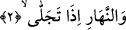
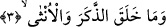

Mecîd’de kendisine yemin etmiştir. Gecenin şerefli olması, gece geldiğinde Allah
dostlarının yalnız kalarak ona münâcât etmesindendir. Zira Allah dostları bütün gece
safâ şarabı içer, rıza elbisesine bürünür, sevgilinin azarını işitmezler. Seher vakti gelip
ferman ulaştığında şu gök kubbenin kapılarını açar, Arş-ı Mecîd’in perdelerinin
eteklerini toplarlar. Allah’ın yakınında bulunanlar Hakk’ın emriyle sükût ederler ve o
vakit, Cebbâr-ı Kâinât olan Hak Teâlâ kendi kibriyâ ve yüceliğine yaraşır şekilde “Her
sevgili kendi sevgilisiyle halvete girdi ve mutluluğa erişti, benim sevgililerim nerede?”
diye hitap eder.
Karanlık çökmüş, derin uykuda âsîler.
Zü’l-celâl’e niyaza durmuş âbidler.
2. Açılıp ağardığı vakit gündüze,
Yani eğer gecenin örtüp bürüdüğü güneşten başka bir şey ise ‘Gecenin zulmetinin
ortadan kalkmasıyla zâhir olduğunda gündüze yemin ederim.’ demektir. Ya da eğer
gecenin karanlığıyla örtüp bürüdüğü güneş ise ‘Güneşin doğmasıyla açılıp ağaran
gündüze yemin ederim, mânâsına gelir.
Burada zevk ve şuhûd ehli için îtibârî taayyünât gündüzünü örtüp bürümesi esnasında
mutlak hüviyyetin gaybı gecesine yemine işâret vardır. Yine hicab ve ihticab ehline
nisbetle aklî taayyünât sebebiyle tecellî ettiği zaman mukayyed varlıklar gündüzünün
nuruna yemine işâret vardır.
Kâşânî der ki: Allah rûhun nurunu örttüğü zaman nefsin zulmeti gecesine, nefis ile
ruhun bir araya gelmesiyle Rahmân’ın arşı olan kalbin varlığı zuhûr ve tecellî ettiği
vakit rûhun nuru gündüzüne yemin etmiştir. Çünkü kalp bu ikisinin bir araya gelmesiyle
zuhûr eder. Kalbin rûha bakan bir yüzü vardır ki ona “fuâd” denir. Kalp onunla ma‘rifeti
ve hakîkatleri telakkî eder. Kalbin nefse bakan bir yüzü vardır ki ona “sadr” denilir.
Gizlilikler/serair onunla korunur, muhafaza edilir. Mânâlar orada şekle bürünür.
3. Erkeği ve dişiyi yaratana yemin ederim ki
“Mâ” harfi müphem ve kapalı olduğu için hakkında kullanıldığı vasıf, künhüne vâkıf
olunamayacak ve aklın onun özelliğinin ne olduğunu idrâki mümkün olmayacak şekilde
kuvvetin ve kemalin en üst derecesine ulaştığını ifâde eder. Mümkün olan sâdece
insanın genel bir kavramı doğru biçimde idrak etmesidir.